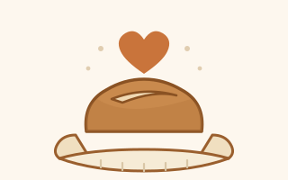

Pass on more than the starter
The flakes are a gift and they come with no strings. But if you end up with bread you are pleased with, here is one thing worth doing with that feeling.

The ask, in one line
If the starter turns out to be worth having, give about five dollars to a charity that feeds people. Your own favourite, or one of the ones below.
That is the entire ask. Nothing is tracked, nobody is counting, and the flakes work exactly the same either way.
Microsoft colleagues: your five dollars becomes ten
It is Give Month, and Microsoft matches employee donations. So the five dollars arrives as ten, which is the single best reason to do this now rather than meaning to later. You can give to effectively any registered non-profit, including every charity further down this page.
aka.ms/give
Scan it, or type it in. You will need to be signed in with your work account — it is an internal site, so anyone else will hit a login screen and get no further. If that is you, the charity links below work for everyone.
Why this, next to a sourdough starter
Bread is the oldest thing we hand to each other. A starter is unusual among gifts in that giving it away costs the giver nothing at all — you divide it, and both of you still have the whole thing. Food banks run on the opposite arithmetic. Five dollars is not much, but it is real, and a lot of people being not-much is how those places stay open.
Charities that feed people
Pick whichever makes sense where you live. These are suggestions, not endorsements, and your own local food bank is very often the best answer.
| Charity | Where | What they do |
|---|---|---|
| World Central Kitchen | Global | Cooks fresh meals in disaster and crisis zones |
| Feeding America | United States | The national network of food banks and pantries |
| Trussell | United Kingdom | Runs the largest UK network of food banks |
| Food Banks Canada | Canada | Supplies and supports food banks nationwide |
| Your local food bank | Wherever you are | Knows exactly who needs what, this week |
Money generally beats tins
Food banks buy wholesale, so a cash donation usually buys several times what the same money spends at a supermarket. It also lets them buy the things they are actually short of rather than the things people have spare. Donate tins if that is what you can do — but if you have the choice, send money.
And if not
Genuinely, that is fine. Feed the people in your own house, give the next batch of flakes to someone who would like them, and we are square. The culture was free to me and it is free to you.
This is a personal page about a jar of flour and water. It is not affiliated with, endorsed by, or anything to do with my employer — get in touch if anything here needs correcting.